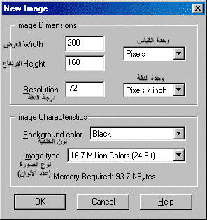
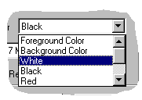
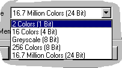

وقفة قصيرة مع
New Image
[المقدمة]
[لنتعرف...]
[الأدوات]
[الألوان]
[التحديد]
[إلغاء التدرج]
[New Image]
[فرشاة الرسم]
[التجانب]
[خلفيات الصفحات]
ما المقصود بهذا العنوان، وتحديداً العبارة New Image؟
هذه العبارة هي عنوان صندوق الحوار الذي يظهر لك عندما تريد بدء العمل مع ملف جديد (صورة جديدة) في برنامج PSP. ذلك لأنه ينبغي عليك كخطوة أولى دائماً تحديد بعض الخيارات الأساسية للصورة التي تريد عملها. وتأتي أهمية هذه الخيارات من كونها ستتحكم في طريقة عملك للصورة، وتحدّد الإمكانيات التي ستكون متاحة لك أثناء ذلك، والأوامر التي ستكون متوفرة. فهي باختصار شديد تحدّد خصائص الصورة وسماتها.
ومع أن البرنامج يتيح لك فيما بعد تعديل هذه الخصائص. لكن ألا تجد أن من الأفضل لنا أن نكون متأكدين من عملنا منذ بدايته!!؟ للعمل في ملف جديد:
- اختر الأمر New من قائمة File أو...
- أنقر الزر New الموجود ضمن شريط الأدوات الأساسية.وسواءً اتبعت الطريقة الأولى أو الثانية فإن كلاهما ستؤدي بك إلى صندوق الحوار الذي تراه أعلاه، والذي سنقوم الآن بتفنيده:
لتحديد أبعاد الصورة قم بكتابة العرض والإرتفاع المطلوبين في الأمكنة المخصصة لذلك. وتحتاج أيضاً لتحديد وحدة القياس: إما بالبيكسل، أو بالبوصة، أو بالسنتيمتر.
بعد ذلك يمكنك تحديد درجة الدقة (أو الكثافة النقطية) للصورة Resolution. وفي رسوم الويب عادة يتم الإبقاء على الكثافة الإفتراضية المحددة أصلاً وهي 72 بيكسل/بوصة
 اختر لون خلفية الصورة من القائمة المنسدلة التي تحتوي على مجموعة الألوان الأساسية (أبيض، أسود، أحمر، أخضر، أزرق) بالإضافة إلى ثلاثة خيارات أخرى هي:
Forground Color
لون الخلفية هو اللون الأمامي المحدد في لوحة الألوان.Background Color
لون الخلفية هو اللون الخلفي المحدد في لوحة الألوان.Transparent
تكون الخلفية شفافة. وبما أن خاصية الشفافية مهمة، وخصوصاً في صفحات الويب فسوف نتكلم عنها في درس مستقل.وللعمل مع الخيارين الأولين يجب عليك أولاً تخصيص اللون المطلوب سواءً كان الأمامي أو الخلفي في لوحة الألوان.
أخيراً تستطيع تحديد عدد ألوان الصورة من القائمة الأخيرة في هذا الصندوق.
 وهي تحدد العدد الأقصى للألوان التي يمكن للصورة استيعابها. وهذا الخيار بالذات له التأثير الأكبر على طريقة عملك في الصورة. وهو يتضمن ما يلي:
لونين فقط: وهما الأسود والأبيض
16 لون
السلم الرمادي: 256 تدرجاً من اللون الرمادي، والتي تقع بين اللونين الأبيض والأسود.
256 لون
16.7 مليون لون، وهي المسماة الألوان الحقيقية.
وبديهي أن أول هذه التأثيرات هو عدد الألوان المتوفرة والتي يمكنك إنتقاءها من لوحة الألوان. كذلك فإن الكثير من الأوامر تصبح غير متاحة لك عندما تختار ألواناً أقل من 16.7 مليون لون. وكمثال مباشر على ذلك لاحظ خيارات ألوان الخلفية وسترى أن خيار الخلفية الشفافة Transparent يختفي عندما يكون عدد الألوان 2 أو 16 أو 256. وقس على ذلك العديد من الأوامر الأخرى. ولهذا السبب ستجد أن العمل مع معظم الصور (إن لم يكن كلها) سيتم باستخدام الحد الأقصى من الألوان.

| إتش.بي بالعربية © 1998-1999 يحيى الشريف |
H.P in arabic © 1998-1999 Yahya Al-Sharif |